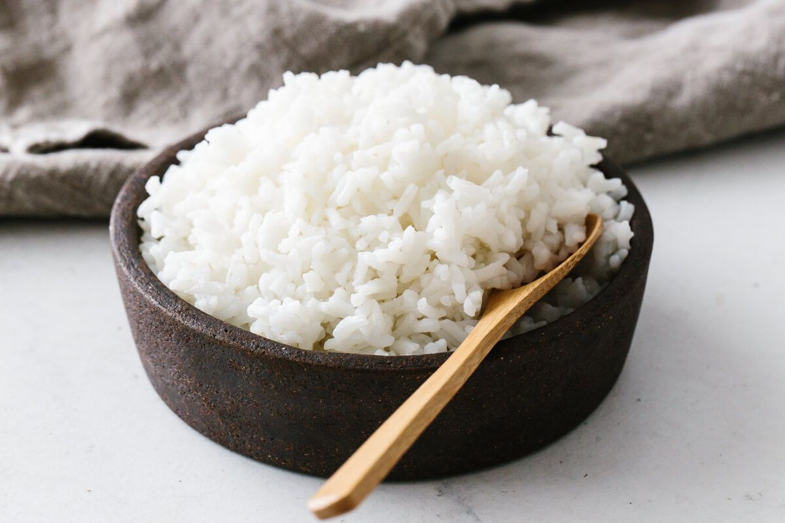

Rice

Description
How to perfectly cook white rice.
Ingredients
Steps
- Rinse the rise with a fine mesh sieve.
- In an uncovered pot, add 1 cut of rice and 1 1/2 and bring to boil.
- Once boiling, cover it with a lit, put low heat and let it simmer for 15 min.
- Turn of the heat and let the rice fluff for 5 min.
Go back